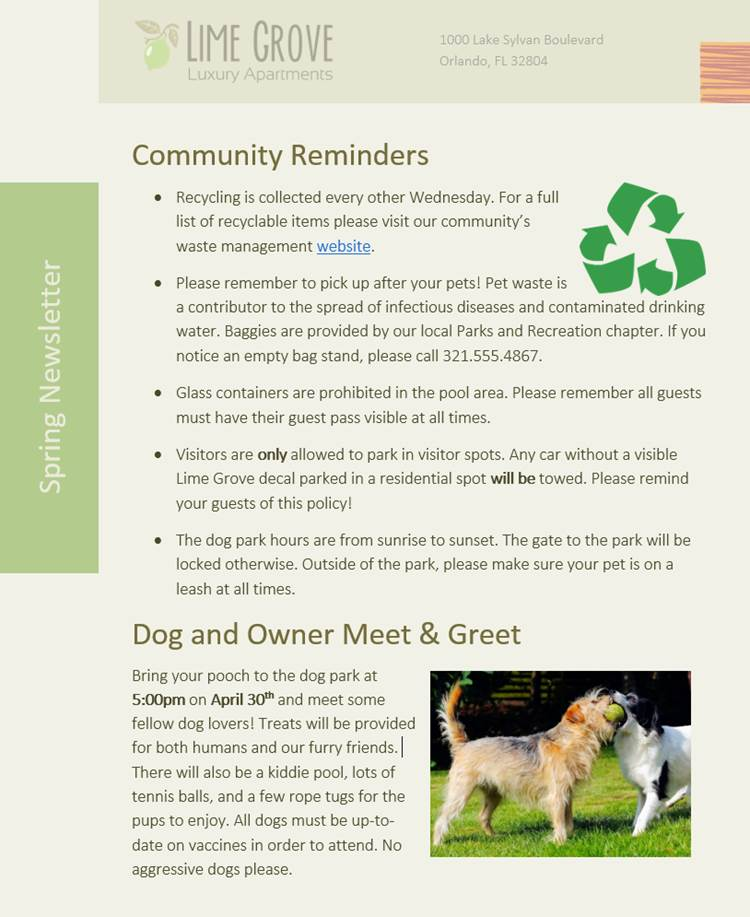

Bekerja dengan Objek
Gambar dan Pembungkus Teks | Memformat Gambar | Bentuk | Kotak Teks | Menyelaraskan, Mengurutkan, dan Mengelompokkan Objek | Tabel | Charts
Gambar dan Pembungkus Teks (Pictures and Text Wrapping)
Menambahkan gambar ke dokumen Anda bisa menjadi cara yang bagus untuk mengilustrasikan informasi penting dan menambahkan aksen dekoratif ke teks yang ada. Digunakan dalam jumlah sedang, gambar dapat meningkatkan tampilan keseluruhan dokumen Anda.
Untuk menyisipkan gambar dari file:
Jika Anda memiliki gambar tertentu, Anda dapat menyisipkan gambar dari file. Dalam contoh kita, kita akan menyisipkan gambar yang disimpan secara lokal di komputer kita. Jika Anda ingin bekerja dengan contoh, klik kanan gambar di bawah dan simpan ke komputer Anda.

Tempatkan titik penyisipan di mana Anda ingin gambar muncul.

Pilih tab Insert pada Ribbon, lalu klik perintah Pictures.

Kotak dialog Sisipkan Gambar akan muncul. Arahkan ke folder tempat gambar Anda berada, lalu pilih gambar dan klik Sisipkan.

Gambar akan muncul di dokumen.

Untuk mengubah ukuran gambar, klik dan seret salah satu tuas pengatur ukuran sudut. Gambar akan berubah ukuran sambil menjaga proporsi yang sama. Jika Anda ingin meregangkannya secara horizontal atau vertikal, Anda dapat menggunakan pegangan ukuran samping.

Mengubah pengaturan pembungkusan teks
Saat Anda menyisipkan gambar dari file, Anda mungkin memperhatikan bahwa sulit untuk memindahkannya tepat di tempat yang Anda inginkan. Ini karena pembungkusan teks untuk gambar diatur ke In Line with Text. Anda harus mengubah pengaturan pembungkusan teks jika Anda ingin memindahkan gambar dengan bebas, atau jika Anda hanya ingin teks membungkus gambar dengan cara yang lebih alami.
Untuk membungkus teks di sekitar gambar:
Pilih gambar yang ingin Anda bungkus teksnya. The Format tab akan muncul di sisi kanan Ribbon.

Pada tab Format, klik perintah Bungkus Teks di grup Susun, lalu pilih opsi pembungkusan teks yang diinginkan. Dalam contoh kita, kita akan memilih In Front of Text sehingga kita dapat dengan bebas memindahkannya tanpa mempengaruhi
teks. Anda juga dapat memilih Opsi Tata Letak Lainnya untuk menyempurnakan tata letak.

Teks akan membungkus gambar. Anda sekarang dapat memindahkan gambar jika Anda mau. Cukup klik dan seret ke lokasi yang diinginkan. Saat Anda memindahkannya, panduan perataan akan muncul untuk membantu Anda menyelaraskan gambar di halaman.

Anda juga dapat mengakses opsi pembungkusan teks dengan memilih gambar dan mengklik tombol Opsi Tata Letak yang muncul.
Jika panduan perataan tidak muncul, pilih tab Page Layout, lalu klik perintah Align. Pilih Use Alignment Guides dari menu drop-down yang muncul.
Menggunakan pengaturan pembungkusan teks yang telah ditentukan sebelumnya
Pembungkusan teks yang telah ditentukan sebelumnya memungkinkan Anda memindahkan gambar dengan cepat ke lokasi tertentu di halaman. Teks akan secara otomatis membungkus objek sehingga tetap mudah dibaca.

Memasukkan gambar online
Jika Anda tidak memiliki gambar yang diinginkan di komputer, Anda dapat menemukan gambar secara online untuk ditambahkan ke dokumen Anda. Word menawarkan dua opsi untuk menemukan gambar online:
Pencarian Gambar Bing : Anda dapat menggunakan opsi ini untuk mencari gambar di Internet. Secara default, Bing hanya menampilkan gambar yang dilisensikan di bawah Creative Commons, yang berarti Anda dapat menggunakannya untuk proyek Anda sendiri. Namun, Anda harus mengeklik tautan ke situs web gambar untuk melihat apakah ada batasan tentang cara penggunaannya.
OneDrive : Anda dapat menyisipkan gambar yang disimpan di OneDrive Anda. Anda juga dapat menautkan akun online lainnya dengan akun Microsoft Anda, termasuk Facebook dan Flickr.

Untuk menyisipkan gambar online:
Tempatkan titik penyisipan di mana Anda ingin gambar muncul.

Pilih tab Sisipkan, lalu klik perintah Gambar Online.

Kotak dialog Sisipkan Gambar akan muncul.
Pilih Pencarian Gambar Bing atau OneDrive Anda. Dalam contoh kita, kita akan menggunakan Pencarian Gambar Bing.

Tekan tombol Enter. Hasil pencarian Anda akan muncul di dalam kotak.
Pilih gambar yang diinginkan, lalu klik Sisipkan.

Gambar akan muncul di dokumen.

Saat menambahkan gambar, video, atau musik ke proyek Anda sendiri, penting untuk memastikan Anda memiliki hak hukum untuk menggunakannya. Sebagian besar barang yang Anda beli atau unduh secara online dilindungi oleh hak cipta, yang berarti Anda mungkin tidak diizinkan untuk menggunakannya. Untuk informasi lebih lanjut, tinjau pelajaran Hak Cipta dan Penggunaan Wajar .
Latihan!
Buka dokumen latihan dan gulir ke halaman 3.
Ubah pembungkus teks gambar anjing menjadi Kotak.
Seret gambar ke sisi kanan paragraf bawah.
Tempatkan titik penyisipan Anda di sebelah judul Pengingat Komunitas.
Gunakan perintah Gambar Online dan ketik kata Daur Ulang ke dalam pencarian.
Sisipkan simbol daur ulang.
Jika perlu, gunakan gagang pengatur ukuran sudut untuk mengubah ukuran simbol daur ulang sehingga semuanya pas di halaman 3.
Ubah pembungkus teks menjadi Kotak dan seret simbol ke sisi kanan poin pertama.
Setelah selesai, halaman 3 akan terlihat seperti ini:

Memformat Gambar (Formatting Pictures)
Ada banyak cara untuk memformat gambar di Word. Misalnya, Anda dapat mengubah ukuran atau bentuk gambar agar lebih sesuai dengan dokumen Anda. Anda juga dapat meningkatkan penampilannya menggunakan alat penyesuaian gambar Word.
Untuk memotong gambar:
Saat Anda memotong gambar, sebagian gambar akan dihapus. Memotong dapat berguna jika Anda bekerja dengan gambar yang terlalu besar dan Anda ingin fokus hanya pada sebagian saja.
Pilih gambar yang ingin Anda potong. The Format tab akan muncul.
Dari tab Format, klik perintah Pangkas.

C ropping handles akan muncul di sisi dan sudut gambar. Klik dan seret pegangan apa pun untuk memotong gambar. Karena gagang pemangkas berada di dekat gagang pengubah ukuran, berhati-hatilah agar tidak menyeret gagang pengubah ukuran secara tidak sengaja.

Untuk mengonfirmasi, klik lagi perintah Pangkas. Gambar akan dipotong.

Pegangan sudut berguna untuk memotong gambar secara bersamaan secara horizontal dan vertikal.
Untuk memotong gambar menjadi bentuk:
Pilih gambar yang ingin Anda potong, lalu klik tab Format.
Klik panah drop-down Pangkas. Arahkan kursor ke Pangkas ke Bentuk, lalu pilih bentuk yang diinginkan dari menu drop-down.
Gambar akan dipotong ke bentuk yang dipilih.
Untuk menambahkan batas ke gambar:
Pilih gambar yang ingin Anda tambahkan batasnya, lalu klik tab Format.
Klik perintah Batas Gambar. Menu drop-down akan muncul.
Dari sini, Anda dapat memilih warna, berat (ketebalan), dan apakah garis putus - putus.

Perbatasan akan muncul di sekitar gambar.
Membuat penyesuaian gambar
Dengan alat penyesuaian gambar Word, Anda dapat dengan mudah mengubah properti seperti warna, kontras, saturasi, dan nada. Word juga menawarkan gaya gambar bawaan, yang dapat digunakan untuk menambahkan bingkai, bayangan jatuh, dan efek standar lainnya.
Saat Anda siap untuk menyesuaikan gambar, cukup pilih. Kemudian gunakan opsi di bawah ini, yang dapat ditemukan di tab Format.
Koreksi
Dari sini, Anda dapat mempertajam atau memperhalus gambar untuk menyesuaikan seberapa jelas atau buram tampilannya. Anda juga dapat menyesuaikan kecerahan dan kontras, yang memengaruhi kecerahan dan intensitas umum gambar.
Warna
Dengan menggunakan perintah ini, Anda dapat menyesuaikan saturasi gambar (seberapa cerah warna yang muncul), nada (suhu warna gambar, dari dingin ke hangat), dan pewarnaan (warna keseluruhan gambar).

Efek Artistik
Di sini, Anda dapat menerapkan efek khusus pada gambar Anda, seperti pastel, cat air, atau tepi bercahaya. Karena hasilnya sangat tebal, Anda mungkin ingin menggunakan efek ini dengan hemat (terutama dalam dokumen profesional).

Grup Gaya Gambar
Grup ini berisi berbagai gaya standar yang membuat pemformatan gambar menjadi lebih mudah. Gaya gambar dirancang untuk membingkai gambar Anda tanpa mengubah pengaturan atau efek dasarnya.

Mengompresi gambar
Jika Anda berencana untuk mengirim email berisi dokumen yang berisi gambar, Anda harus memantau ukuran filenya. Gambar besar beresolusi tinggi dapat menyebabkan dokumen Anda menjadi sangat besar, yang mungkin menyulitkan untuk dilampirkan ke email. Selain itu, area gambar yang dipotong disimpan dalam dokumen secara default, yang dapat menambah ukuran file.
Untungnya, Anda dapat mengurangi ukuran file dokumen dengan mengompresi gambar. Ini akan menurunkan resolusinya dan menghapus area yang dipotong.
Mengompresi gambar dapat secara nyata memengaruhi kualitasnya (misalnya, gambar menjadi buram atau berpiksel). Karena itu, sebaiknya simpan salinan tambahan dokumen Anda sebelum mengompresi gambar. Juga, bersiaplah untuk menggunakan perintah Undo jika Anda tidak puas dengan hasilnya.
Untuk mengompresi gambar:
Pilih gambar yang ingin Anda kompres, lalu navigasikan ke tab Format.
Klik perintah Kompres Gambar.
Sebuah kotak dialog akan muncul. Centang kotak di sebelah Hapus area gambar yang dipotong. Anda juga dapat memilih apakah akan menerapkan pengaturan ke gambar ini saja atau ke semua gambar dalam dokumen.
Pilih keluaran Target. Jika Anda mengirim dokumen melalui email, Anda mungkin ingin memilih Email, yang menghasilkan ukuran file terkecil.
Klik Oke.

Latihan!
Buka dokumen latihan.
Gulir ke halaman 2 dan pilih gambar perahu layar.
Di tab Format, ubah gaya menjadi Bingkai Sederhana, Putih.
Dengan gambar tetap dipilih, gunakan Crop to Shape dan crop ke bentuk Double Wave dalam kategori Stars and Banners. Petunjuk : Nama bentuk akan muncul saat Anda mengarahkan kursor ke atasnya.
Pilih gambar jangkar.
Di tab Format, gunakan menu drop-down Warna untuk mewarnai ulang jangkar menjadi Emas, Warna Aksen 2 Terang.
Setelah selesai, halaman Anda akan terlihat seperti ini:

Bentuk (Shapes)
Anda dapat menambahkan berbagai bentuk ke dokumen Anda, termasuk panah, info, kotak, bintang, dan bentuk diagram alur. Ingin membedakan nama dan alamat Anda dari resume Anda yang lain? Gunakan garis. Perlu membuat diagram yang menunjukkan garis waktu atau proses? Gunakan bentuk diagram alur. Meskipun Anda mungkin tidak memerlukan bentuk di setiap dokumen yang Anda buat, mereka dapat menambahkan daya tarik visual dan kejelasan.
Untuk menyisipkan bentuk:
Pilih tab Sisipkan, lalu klik perintah Bentuk. Menu drop-down bentuk akan muncul.
Pilih bentuk yang diinginkan.
Klik dan seret di lokasi yang diinginkan untuk menambahkan bentuk ke dokumen Anda.

Jika mau, Anda dapat memasukkan teks dalam bentuk. Saat bentuk muncul di dokumen Anda, Anda bisa mulai mengetik. Anda kemudian dapat menggunakan opsi pemformatan pada tab Beranda untuk mengubah font, ukuran font, atau warna teks.

Untuk mengubah urutan bentuk:
Jika satu bentuk tumpang tindih dengan yang lain, Anda mungkin perlu mengubah urutannya sehingga bentuk yang benar muncul di depan. Anda dapat membawa bentuk ke depan atau mengirimkannya ke belakang. Jika Anda memiliki banyak gambar, Anda dapat menggunakan Bawa ke Depan atau Kirim ke Belakang untuk menyesuaikan urutannya. Anda juga dapat memindahkan bentuk di depan atau di belakang teks.
Klik kanan bentuk yang ingin Anda pindahkan. Dalam contoh, ingin hati muncul di belakang pita, jadi akan mengklik kanan hati.

Di menu yang muncul, arahkan kursor ke Bawa ke Depan atau Kirim ke Belakang. Beberapa opsi pemesanan akan muncul. Pilih opsi pemesanan yang diinginkan. Dalam contoh ini, kita akan memilih Send to Back.

Urutan bentuk akan berubah.

Dalam beberapa kasus, opsi pengurutan yang Anda pilih tidak akan memengaruhi pengurutan bentuk. Jika ini terjadi, coba pilih opsi yang sama lagi atau coba opsi lain.
Jika Anda memiliki beberapa bentuk yang ditempatkan di atas satu sama lain, mungkin sulit untuk memilih satu bentuk. The panel Seleksi memungkinkan Anda untuk memilih bentuk dan tarik ke lokasi baru. Untuk mengakses panel Pilihan, klik Panel Pilihan pada tab Format.

Untuk mengubah ukuran bentuk:
Pilih bentuk yang ingin Anda ubah ukurannya. Gagang pengatur ukuran akan muncul di sudut dan sisi bentuk.

Klik dan seret gagang pengatur ukuran hingga bentuknya sesuai dengan ukuran yang diinginkan. Anda dapat menggunakan gagang pengatur ukuran sudut untuk mengubah tinggi dan lebar bentuk secara bersamaan.
Untuk memutar bentuk, klik dan seret gagang rotasi.

Beberapa bentuk juga memiliki satu atau lebih pegangan kuning yang dapat digunakan untuk memodifikasi bentuk. Misalnya, dengan bentuk spanduk Anda dapat mengatur posisi lipatan.

Memodifikasi bentuk
Word memungkinkan Anda untuk memodifikasi bentuk Anda dalam berbagai cara sehingga Anda dapat menyesuaikannya dengan proyek Anda. Anda dapat mengubah bentuk menjadi bentuk yang berbeda, memformat gaya dan warna bentuk, dan menambahkan berbagai efek.
Untuk mengubah gaya bentuk:
Memilih gaya bentuk memungkinkan Anda menerapkan warna dan efek prasetel untuk mengubah tampilan bentuk Anda dengan cepat.
Pilih bentuk yang ingin Anda ubah.

Pada Format tab, klik Lebih panah drop-down di Styles Shape kelompok.

Menu drop-down gaya akan muncul. Pilih gaya yang ingin Anda gunakan.

Bentuk akan muncul dalam gaya yang dipilih.
Untuk mengubah warna isian bentuk:
Pilih bentuk yang ingin Anda ubah.

Pada tab Format, klik panah turun bawah Isi Bentuk. Pilih warna yang ingin Anda gunakan. Untuk melihat opsi warna tambahan, pilih More Fill Colors.
Bentuknya akan muncul dalam warna isian yang dipilih.

Jika Anda ingin menggunakan jenis isian yang berbeda, pilih Gradien atau Tekstur dari menu drop-down. Anda juga dapat memilih Tanpa Isi untuk membuatnya transparan.
Untuk mengubah garis bentuk:
Pilih bentuk yang ingin Anda ubah.

Pada tab Format, klik panah turun bawah Shape Outline. Menu Shape Outline akan muncul.
Pilih warna yang ingin Anda gunakan. Jika Anda ingin membuat outline transparan, pilih No Outline.
Bentuk akan muncul dalam warna garis yang dipilih.
Dari menu drop-down, Anda dapat mengubah warna garis, berat (ketebalan), dan apakah itu garis putus - putus.

Untuk menambahkan efek bentuk:
Pilih bentuk yang ingin Anda ubah.

Pada tab Format, klik panah turun bawah Efek Bentuk. Di menu yang muncul, arahkan mouse ke gaya efek yang ingin Anda tambahkan, lalu pilih efek preset yang diinginkan.

Bentuk akan muncul dengan efek yang dipilih.

Untuk lebih menyesuaikan efek bentuk Anda, pilih Opsi di akhir setiap menu. Panel Format Shape akan muncul, memungkinkan Anda untuk menyesuaikan efek.

Untuk mengubah ke bentuk lain:
Pilih bentuk yang ingin Anda ubah. The Format tab akan muncul.

Pada tab Format, klik perintah Edit Bentuk. Di menu yang muncul, arahkan mouse ke Change Shape, lalu pilih bentuk yang diinginkan.
Bentuk baru akan muncul.

Latihan!
Buka dokumen latihan.
Di sisi kanan halaman, sisipkan bentuk awan dari grup Bentuk dasar. Petunjuk: Nama bentuk muncul saat Anda mengarahkan kursor ke atasnya.
Ubah garis bentuk menjadi abu-abu.
Ubah isian bentuk menjadi putih.
Di bawah menu drop-down Shape Effects, tambahkan Circle Bevel.
Di atas awan, masukkan bentuk Matahari dari grup Bentuk dasar.
Ubah gaya bentuk menjadi gaya Emas pilihan Anda. Petunjuk : Nama gaya muncul saat Anda mengarahkan kursor ke atasnya. Pastikan nama gaya memiliki kata Emas di dalamnya.
Kirim bentuk matahari ke belakang sehingga berada di belakang bentuk awan.
Jika perlu, pindahkan bentuk awan sehingga matahari mengintip dari baliknya.
Setelah selesai, gambar Anda akan terlihat seperti ini:
Kotak Teks (Text Boxes)
Kotak teks dapat berguna untuk menarik perhatian pada teks tertentu. Mereka juga dapat membantu ketika Anda perlu memindahkan teks di dalam dokumen Anda. Word memungkinkan Anda untuk memformat kotak teks dan teks di dalamnya menggunakan berbagai gaya dan efek.
Untuk menyisipkan kotak teks:
Pilih tab Sisipkan, lalu klik perintah Kotak Teks di grup Teks.

Menu drop-down akan muncul. Pilih Gambar Kotak Teks.
Klik dan seret di mana saja pada dokumen untuk membuat kotak teks.

Titik penyisipan akan muncul di dalam kotak teks. Anda sekarang dapat mengetik untuk membuat teks di dalam kotak teks.

Jika mau, Anda dapat memilih teks lalu mengubah font, warna, dan ukuran dengan menggunakan perintah pada tab Format dan Beranda. Untuk mempelajari lebih lanjut tentang menggunakan perintah pemformatan ini, tinjau pelajaran Memformat Teks.

Klik di mana saja di luar kotak teks untuk kembali ke dokumen Anda.
Anda juga dapat memilih salah satu dari built-in kotak teks yang telah ditentukan sebelumnya warna, font, posisi, dan ukuran. Jika Anda memilih opsi ini, kotak teks akan muncul secara otomatis, jadi Anda tidak perlu menggambarnya.

Untuk memindahkan kotak teks:
Klik kotak teks yang ingin Anda pindahkan.
Arahkan mouse ke salah satu tepi kotak teks. Mouse akan berubah menjadi salib dengan panah.
Klik dan seret kotak teks ke lokasi yang diinginkan.

Untuk mengubah ukuran kotak teks:
Klik kotak teks yang ingin Anda ubah ukurannya.
Klik dan seret salah satu gagang pengatur ukuran di sudut atau sisi kotak teks hingga mencapai ukuran yang diinginkan.
Memodifikasi kotak teks
Word menawarkan beberapa opsi untuk mengubah cara kotak teks muncul di dokumen Anda. Anda dapat mengubah bentuk, gaya, dan warna kotak teks atau menambahkan berbagai efek.
Untuk mengubah gaya bentuk:
Memilih gaya bentuk memungkinkan Anda menerapkan warna dan efek prasetel untuk mengubah tampilan kotak teks Anda dengan cepat.
Pilih kotak teks yang ingin Anda ubah.
Pada Format tab, klik Lebih panah drop-down di Styles Shape kelompok.

Menu drop-down gaya akan muncul. Pilih gaya yang ingin Anda gunakan.

Kotak teks akan muncul dalam gaya yang dipilih.

Jika Anda ingin memiliki kontrol lebih besar atas pemformatan kotak teks, Anda dapat menggunakan salah satu opsi pemformatan bentuk seperti Isi Bentuk dan Garis Bentuk. Untuk mempelajari lebih lanjut, tinjau pelajaran Bentuk.
Untuk mengubah bentuk kotak teks:
Mengubah bentuk kotak teks bisa menjadi opsi yang berguna untuk menciptakan tampilan yang menarik di dokumen Anda.
Pilih kotak teks yang ingin Anda ubah. The Format tab akan muncul.
Dari tab Format, klik perintah Edit Bentuk.

Arahkan mouse ke Change Shape, lalu pilih bentuk yang diinginkan dari menu yang muncul.
Kotak teks akan muncul diformat sebagai bentuk.

Latihan!
Buka dokumen latihan.
Sisipkan Kotak Teks Sederhana.
Di kotak teks, ketik Dapatkan tambahan diskon 25% saat Anda menyebutkan iklan ini!
Ubah font menjadi Gadugi, 20 pt, Center Align.
Ubah bentuk kotak teks menjadi Gelombang Ganda dari grup Bintang dan Spanduk.
Mengubah gaya kotak teks dengan memilih gaya apapun dalam Efek Intens baris.
Seret kotak teks ke ruang di bawah Beli 1, Dapatkan 1 Gratis* dan Pakaian Formal.
Setelah selesai, dokumen Anda akan terlihat seperti ini:

Menyelaraskan, Mengurutkan, dan Mengelompokkan Objek Aligning, Ordering, and Grouping Objects)
Ada kalanya dokumen Anda memiliki beberapa objek, seperti gambar, bentuk, dan kotak teks. Anda dapat mengatur objek dengan cara apa pun yang Anda inginkan dengan menyelaraskan, mengelompokkan, mengurutkan, dan memutarnya dengan berbagai cara.
Untuk menyelaraskan dua atau lebih objek:
Tahan tombol Shift (atau Ctrl ) dan klik objek yang ingin Anda ratakan. Dalam contoh kita, kita akan memilih empat bentuk di sebelah kanan.
Dari tab Format, klik perintah Align, lalu pilih salah satu opsi perataan s. Dalam contoh kita, kita akan memilih Align Right.
Objek akan disejajarkan berdasarkan opsi yang dipilih. Dalam contoh kita, bentuknya sekarang sejajar satu sama lain.
Perhatikan bahwa opsi Align Selected Objects dipilih secara default, yang memungkinkan Anda untuk meratakan objek tanpa memindahkannya ke bagian halaman yang berbeda. Namun, jika Anda ingin memindahkan objek ke atas atau bawah halaman, pilih Ratakan ke Halaman atau Ratakan ke Margin sebelum memilih opsi perataan.
Untuk mendistribusikan objek secara merata:
Jika Anda telah mengatur objek Anda dalam satu baris atau kolom, Anda mungkin ingin mereka berada pada jarak yang sama satu sama lain untuk tampilan yang lebih rapi. Anda dapat melakukan ini dengan mendistribusikan objek secara horizontal atau vertikal.
Tahan tombol Shift (atau Ctrl ) dan klik objek yang ingin Anda distribusikan.
Pada tab Format, klik perintah Align, lalu pilih Distribute Horizontally atau Distribute Vertically.

Objek-objek akan ditempatkan secara merata satu sama lain.

Mengelompokkan objek
Kadang-kadang, Anda mungkin ingin mengelompokkan beberapa objek menjadi satu objek sehingga mereka akan tetap bersama. Ini biasanya lebih mudah daripada memilihnya satu per satu, dan juga memungkinkan Anda untuk mengubah ukuran dan memindahkan semua objek secara bersamaan.
Untuk mengelompokkan objek:
Tahan tombol Shift (atau Ctrl ) dan klik objek yang ingin Anda kelompokkan.
Klik perintah Group pada tab Format, lalu pilih Group.

Objek yang dipilih sekarang akan dikelompokkan. Akan ada satu kotak dengan gagang pengatur ukuran di sekitar seluruh grup sehingga Anda dapat memindahkan atau mengubah ukuran semua objek secara bersamaan.

Untuk memisahkan objek:
Pilih objek yang dikelompokkan. Dari tab Format, klik perintah Group dan pilih Ungroup.

Objek akan dipisahkan.

Memesan objek
Selain menyelaraskan objek, Word memberi Anda kemampuan untuk mengatur objek dalam urutan tertentu. Pengurutan ini penting ketika dua atau lebih objek tumpang tindih karena menentukan objek mana yang berada di depan atau di belakang.
Memahami level
Objek ditempatkan pada tingkat yang berbeda sesuai dengan urutan di mana mereka dimasukkan ke dalam dokumen. Pada contoh di bawah, jika kita memindahkan gambar gelombang ke awal dokumen, itu menutupi beberapa kotak teks. Ini karena gambar saat ini berada di level tertinggi—atau teratas. Namun, kita dapat mengubah levelnya untuk meletakkannya di belakang objek lain.

Untuk mengubah level objek:
Pilih objek yang ingin Anda pindahkan. Dalam contoh kita, kita akan memilih gambar gelombang.
Dari tab Format, klik perintah Bawa Maju atau Kirim Mundur untuk mengubah urutan objek satu tingkat. Dalam contoh kita, kita akan memilih Send Backward.

Objek akan diatur ulang. Dalam contoh kita, gambar sekarang berada di belakang teks di sebelah kiri, tetapi masih menutupi bentuk di sebelah kanan.
Jika Anda ingin memindahkan objek di belakang atau di depan beberapa objek, biasanya lebih cepat menggunakan Bring Forward atau Send Backward daripada mengklik perintah pengurutan lainnya beberapa kali.

Dalam contoh kita, gambar telah dipindahkan ke belakang semua yang lain di halaman, sehingga semua teks dan bentuk lainnya terlihat.
Jika Anda memiliki beberapa objek yang ditempatkan di atas satu sama lain, mungkin sulit untuk memilih objek individual. The Seleksi Pane memungkinkan Anda untuk dengan mudah menyeret objek ke tingkat yang berbeda. Untuk melihat Panel Pilihan, klik Panel Pilihan pada tab Format.

Untuk memutar atau membalik objek:
Jika Anda perlu memutar objek sehingga menghadap ke arah yang berbeda, Anda dapat memutarnya ke kiri atau ke kanan, atau Anda dapat membaliknya secara horizontal atau vertikal.
Dengan objek yang diinginkan dipilih, klik perintah Rotate pada tab Format, lalu pilih opsi rotasi yang diinginkan. Dalam contoh kita, kita akan memilih Flip Horizontal.

Objek akan diputar. Dalam contoh kita, sekarang kita dapat melihat gelembung di sebelah kiri yang sebelumnya tersembunyi di balik kotak teks.
Latihan!
Buka dokumen latihan.
Gulir ke halaman 2 dan pilih gambar ombak di bagian atas halaman.
Gunakan perintah Rotate untuk membalik gelombang secara vertikal.
Gunakan perintah Send to Back untuk memindahkan gelombang di belakang kotak teks Martinique.
Pindahkan kotak teks Martinique sehingga berada di dekat bagian bawah gambar gelombang.
Pastikan gambar gelombang dan kotak teks Martinik tidak lagi dipilih. Tahan tombol Shift, lalu pilih kotak teks yang berisi Cleaning, Maintenance, Repair, dan Restoration.
Klik perintah Align, dan pastikan opsi Align Selected Objects dipilih. Pilih Rata Kanan dan Distribusikan Secara Vertikal.
Dengan kotak teks masih dipilih, kelompokkan.
Setelah selesai, halaman Anda akan terlihat seperti ini:
Tabel (Tables)
Sebuah meja adalah grid sel diatur dalam baris dan kolom. Tabel dapat digunakan untuk mengatur semua jenis konten, baik Anda bekerja dengan teks atau data numerik. Di Word, Anda bisa dengan cepat menyisipkan tabel kosong atau mengonversi teks yang sudah ada menjadi tabel. Anda juga dapat menyesuaikan tabel Anda menggunakan gaya dan tata letak yang berbeda.
Untuk menyisipkan tabel kosong:
Tempatkan titik penyisipan di tempat Anda ingin tabel muncul.
Arahkan ke tab Sisipkan, lalu klik perintah Tabel.

Ini akan membuka menu drop-down yang berisi kisi. Arahkan kursor ke kisi untuk memilih jumlah kolom dan baris yang Anda inginkan.
Klik kisi untuk mengonfirmasi pilihan Anda, dan sebuah tabel akan muncul.
Untuk memasukkan teks, tempatkan titik penyisipan disel apa saja, lalu mulai mengetik.
Untuk menavigasi antar sel, gunakan Tombol tab atau tombol panah pada keyboard Anda. Jika titik penyisipan berada di sel terakhir, menekan tombol Tab akan secara otomatis membuat baris baru.
Untuk mengonversi teks yang ada menjadi tabel:
Pada contoh di bawah, setiap baris teks berisi bagian dari daftar periksa, termasuk tugas dan hari dalam seminggu. Item dipisahkan oleh tab. Word dapat mengubah informasi ini menjadi tabel, menggunakan tab untuk memisahkan data menjadi kolom.
Pilih teks yang ingin Anda konversi menjadi tabel. Jika Anda menggunakan file latihan, Anda dapat menemukan teks ini di halaman 2 dokumen.

Buka tab Sisipkan, lalu klik perintah Tabel.
Pilih Konversi Teks ke Tabel dari menu drop-down.

Sebuah kotak dialog akan muncul. Pilih salah satu opsi di bawah Teks terpisah di. Beginilah cara Word mengetahui apa yang harus dimasukkan ke dalam setiap kolom.

Klik Oke. Teks akan muncul dalam tabel.

Memodifikasi tabel
Anda dapat dengan mudah mengubah tampilan tabel setelah menambahkannya ke dokumen. Ada beberapa opsi untuk penyesuaian, termasuk menambahkan baris atau kolom dan mengubah gaya tabel.
Untuk menambahkan baris atau kolom:
Arahkan kursor ke luar tabel tempat Anda ingin menambahkan baris atau kolom. Klik tanda plus yang muncul.

Baris atau kolom baru akan ditambahkan ke tabel.

Anda juga dapat mengklik kanan tabel, lalu mengarahkan kursor ke Sisipkan untuk melihat berbagai opsi baris dan kolom.

Untuk menghapus baris atau kolom:
Tempatkan titik penyisipan di baris atau kolom yang ingin Anda hapus.
Klik kanan, lalu pilih Hapus Sel dari menu.

Sebuah kotak dialog akan muncul. Pilih Hapus seluruh baris atau Hapus seluruh kolom, lalu klik OK.
Baris atau kolom akan dihapus.
Untuk menerapkan gaya tabel:
Gaya tabel memungkinkan Anda mengubah tampilan dan nuansa meja secara instan. Mereka mengontrol beberapa elemen desain, termasuk warna, batas, dan font.
Klik di mana saja di tabel Anda untuk memilihnya, lalu klik tab Desain di ujung kanan Pita.

Menemukan Table Styles grup, lalu klik Lebih drop-down untuk melihat daftar lengkap dari gaya.

Pilih gaya tabel yang Anda inginkan.

Gaya tabel akan muncul.
Untuk mengubah opsi gaya tabel:
Setelah Anda memilih gaya meja, Anda dapat mengaktifkan berbagai pilihan pada atau off untuk mengubah penampilan. Ada enam opsi: Baris Header, Baris Total, Baris Berpita, Kolom Pertama, Kolom Terakhir, dan Kolom Berpita.
Klik di mana saja di tabel Anda, lalu navigasikan ke tab Desain.
Temukan grup Opsi Gaya Tabel, lalu centang atau hapus centang opsi yang diinginkan.
Gaya tabel akan diubah.

Tergantung pada Gaya Tabel yang Anda pilih, Opsi Gaya Tabel tertentu mungkin memiliki efek yang berbeda. Anda mungkin perlu bereksperimen untuk mendapatkan tampilan yang Anda inginkan.
Untuk menerapkan batas ke tabel:
Pilih sel yang ingin Anda terapkan batasnya.

Gunakan perintah pada tab Design untuk memilih Line Style, Line Weight, dan Pen Color yang diinginkan.

Klik panah drop-down di bawah perintah Borders.
Pilih jenis perbatasan dari menu.

Perbatasan akan diterapkan ke sel yang dipilih.

Memodifikasi tabel menggunakan tab Layout
Di Word, tab Tata Letak muncul setiap kali Anda memilih tabel Anda. Anda dapat menggunakan opsi pada tab ini untuk melakukan berbagai modifikasi.
Klik tombol di interaktif di bawah ini untuk mempelajari lebih lanjut tentang kontrol tata letak tabel Word.

Sejajarkan Teks Sel
Dengan mengubah perataan sel, Anda dapat mengontrol dengan tepat lokasi teks. Pada contoh di bawah, teks telah disejajarkan ke tengah.
Latihan!
Buka dokumen latihan.
Gulir ke halaman 3 dan pilih semua teks di bawah tanggal 8 Juli - 12 Juli.
Gunakan Konversi Teks ke Tabel untuk menyisipkan teks ke dalam tabel 6 kolom. Pastikan untuk Pisahkan teks di Tabs.
Hapus kolom Sabtu.
Sisipkan kolom di sebelah kiri kolom Friday dan ketik Kamis di sel atas.
Ubah gaya tabel ke gaya apa pun yang dimulai dengan Tabel Kotak 5. Petunjuk : Nama gaya muncul saat Anda mengarahkan kursor ke atasnya.
Di menu Opsi Gaya Tabel, hapus centang Baris Bergaris dan centang Kolom Bergaris.
Pilih seluruh tabel. Di Borders menu drop-down, pilih All Borders.
Dengan meja masih dipilih, tambah tinggi baris meja menjadi 0,3" (0,8 cm).
Pilih baris pertama dan ubah perataan sel menjadi Align Center.
Setelah selesai, tabel Anda akan terlihat seperti ini:

Charts
Sebuah grafik adalah alat yang dapat digunakan untuk mengkomunikasikan informasi grafis. Menyertakan Chart dalam dokumen Anda dapat membantu Anda mengilustrasikan data numerik seperti perbandingan dan tren sehingga lebih mudah dipahami oleh pembaca.
unduh file Doc unduh file Excel
Jenis grafik
Ada beberapa jenis grafikuntuk memilih dari. Untuk menggunakan Chart secara efektif, Anda harus memahami apa yang membuat masing-masing Chart unik.
Klik panah di tayangan slide di bawah ini untuk mempelajari lebih lanjut tentang jenis Chart di Word.

Word memiliki berbagai jenis Chart, masing-masing dengan kelebihannya sendiri. Klik panah untuk melihat beberapa tipe Chart berbeda yang tersedia di Word.

Chart kolom menggunakan batang vertikal untuk mewakili data. Mereka dapat bekerja dengan berbagai jenis data, tetapi paling sering digunakan untuk membandingkan informasi.

Chart garis sangat ideal untuk menunjukkan tren. Titik data dihubungkan dengan garis, sehingga mudah untuk melihat apakah nilai meningkat atau menurun dari waktu ke waktu.
Diagram lingkaran memudahkan untuk membandingkan proporsi. Setiap nilai ditampilkan sebagai sepotong kue, sehingga mudah untuk melihat nilai mana yang membentuk persentase keseluruhan.
Chart batang berfungsi seperti Chart kolom, tetapi menggunakan batang horizontal daripada vertikal.

Diagram area mirip dengan diagram garis, kecuali area di bawah garis yang diisi.

Chart permukaan memungkinkan Anda menampilkan data di seluruh lanskap 3D. Mereka bekerja paling baik dengan kumpulan data besar, memungkinkan Anda untuk melihat berbagai informasi secara bersamaan.
Chart garis sangat ideal untuk menunjukkan tren. Titik data dihubungkan dengan garis, sehingga mudah untuk melihat apakah nilai meningkat atau menurun dari waktu ke waktu.
Mengidentifikasi bagian-bagian dari grafik
Selain jenis Chart, Anda harus memahami cara membaca Chart. Chart berisi beberapa elemen—atau bagian—yang berbeda yang dapat membantu Anda menginterpretasikan data.
Klik tombol di interaktif di bawah ini untuk mempelajari tentang berbagai bagian Chart.

Untuk menyisipkan grafik:
Tempatkan titik penyisipan di mana Anda ingin grafik muncul.
Arahkan ke tab Sisipkan, lalu klik perintah Chart di grup Ilustrasi.

Sebuah kotak dialog akan muncul. Untuk melihat opsi Anda, pilih jenis Chart dari panel kiri, lalu telusuri Chart di sebelah kanan.
Pilih grafik yang diinginkan, lalu klik OK.
Sebuah grafik dan jendela spreadsheet akan muncul. Teks dalam spreadsheet hanyalah pengganti yang harus Anda ganti dengan data sumber Anda sendiri. Data sumber adalah apa yang akan digunakan Word untuk membuat Chart.

Masukkan data sumber Anda ke dalam spreadsheet.

Hanya data yang terlampir dalam kotak biru yang akan muncul di Chart. Jika perlu, klik dan seret sudut kanan bawahkotak biru untuk menambah atau mengurangi rentang data secara manual.

Setelah selesai, klik X untuk menutup jendela spreadsheet.
Grafik akan selesai.

Untuk mengedit Chart Anda lagi, cukup pilih, lalu klik perintah Edit Data pada tab Desain. Jendela spreadsheet akan muncul kembali.

Membuat grafik dengan data Excel yang ada
Jika Anda sudah memiliki data dalam file Excel yang ada yang ingin Anda gunakan di Word, Anda bisa menyalin dan menempelkannya alih-alih memasukkannya dengan tangan. Cukup buka spreadsheet di Excel, salin data, lalu tempel sebagai sumber data di Word.
Memodifikasi grafik dengan alat grafik
Ada banyak cara untuk menyesuaikan dan mengatur Chart Anda di Word. Sebagai contoh, Anda dapat dengan cepat mengubah jenis grafik, mengatur ulang data, dan bahkan mengubah grafik ini penampilan.
Untuk beralih data baris dan kolom:
Terkadang Anda mungkin ingin mengubah cara data Chart Anda dikelompokkan. Misalnya, pada Chart di bawah, data dikelompokkan menurut genre, dengan kolom untuk setiap bulan. Jika kita mengganti baris dan kolom, data akan dikelompokkan berdasarkan bulan. Dalam kedua kasus, Chart berisi data yang sama—hanya disajikan dengan cara yang berbeda.
Pilih Chart yang ingin Anda ubah. The Desain tab akan muncul di sisi kanan Ribbon.

Dari tab Desain, klik perintah Edit Data di grup Data.
Klik lagi Chart untuk memilihnya kembali, lalu klik perintah Switch Row/Column.

Baris dan kolom akan dialihkan. Dalam contoh, data sekarang dikelompokkan berdasarkan bulan, dengan kolom untuk setiap genre.

Untuk mengubah jenis Chart:
Jika Anda menemukan bahwa jenis Chart yang Anda pilih tidak sesuai dengan data Anda, Anda dapat mengubahnya ke yang lain. Dalam contoh, akan mengubah jenis Chart dari Chart kolom menjadi Chart garis.
Pilih Chart yang ingin Anda ubah. The Desain tab akan muncul.
Dari tab Design, klik perintah Change Chart Type.

Sebuah kotak dialog akan muncul. Pilih grafik yang diinginkan, lalu klik OK.
Jenis Chart baru akan diterapkan. Dalam contoh kita, diagram garis memudahkan untuk melihat tren dari waktu ke waktu.

Untuk mengubah tata letak Chart:
Untuk mengubah susunan Chart Anda, coba pilih tata letak yang berbeda. Tata letak dapat memengaruhi beberapa elemen, termasukjudul grafik dan label data.
Pilih Chart yang ingin Anda ubah. The Desain tab akan muncul.
Dari tab Desain, klik perintah Tata Letak Cepat.

Pilih tata letak yang diinginkan dari menu drop-down.

Chart akan diperbarui untuk mencerminkan tata letak baru.

Jika Anda tidak melihat tata letak Chart yang memiliki apa yang Anda butuhkan, Anda bisa mengklik perintah Tambahkan Elemen Chart pada tab Desain untuk menambahkan judul sumbu, garis kisi, dan elemen Chart lainnya.
Untuk mengisi placeholder (seperti judul Chart atau judul sumbu ), klik elemen dan masukkan teks Anda.
Untuk mengubah gaya Chart:
Gaya Chart Word memberi Anda cara mudah untuk mengubah desain Chart Anda, termasuk warna, gaya, dan elemen tata letak tertentu.
Pilih Chart yang ingin Anda ubah. The Desain tab akan muncul.
Dari tab Design, klik panah drop-down More di grup Chart Styles.
Menu drop-down gaya akan muncul. Pilih gaya yang Anda inginkan.

Gaya Chart akan diterapkan.

Untuk penyesuaian yang lebih cepat, gunakan pintasan pemformatan di sebelah kanan Chart Anda. Ini memungkinkan Anda untuk menyesuaikan gaya grafik, grafik elemen, dan bahkan menambahkan filter untuk data Anda.

Latihan!
- Buka dokumen latihan. Anda juga perlu mengunduh File Excel.
- Masukkan Chart Garis ke dalam dokumen Word latihan.
- Buka File latihan di Excel. Salin data dan tempel ke dalam spreadsheet Chart.
- Ubah judul Chart menjadi Penjualan Bulanan.
- Ubah jenis Chart menjadi Kolom Bertumpuk.
- Gunakan menu drop-down Tata Letak Cepat untuk mengubah ke Tata Letak 3.
- Gunakan menu drop-down Tambahkan Elemen Chart untuk menambahkan Judul Sumbu Vertikal Utama.
- Klik dua kali judul sumbu, lalu ganti namanya menjadi Sale Profits.
- Beralih data Baris/Kolom.
- Setelah selesai, Chart Anda akan terlihat seperti ini: